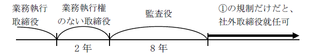
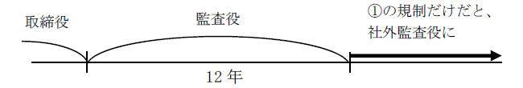
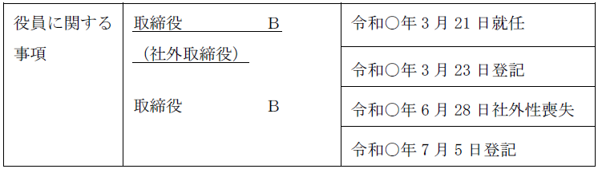
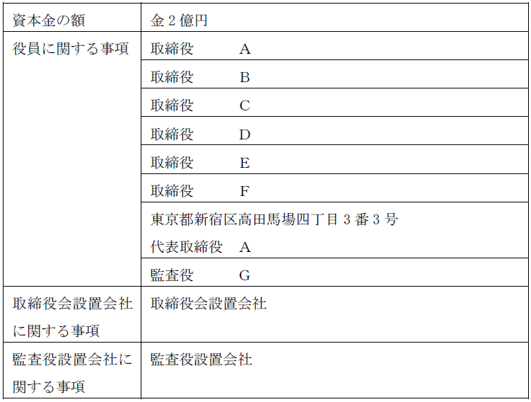
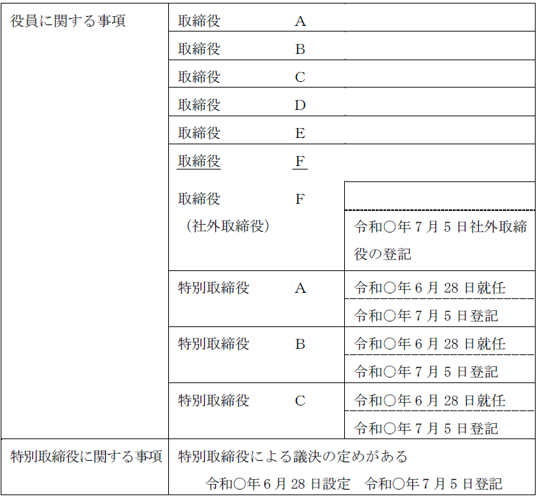

第２編 株式会社
第２章 機関
第８節 社外取締役等、特別取締役による議決の定め
Ⅰ 社外取締役・社外監査役
1. 趣旨
社外取締役・社外監査役に該当する者とは、経営者からの独立性が確保されている取締役・監査役のことである。一定の要件を満たす株式会社について、このような社外取締役や社外監査役の設置を義務づけることによって、株式会社の適切な経営を実現する趣旨である。
2. 要件
(1) 社外取締役の要件
社外取締役とは、株式会社の取締役であって、以下のいずれにも該当するものをいう（会社法2条15号）。
| 社外取締役の要件 |
| ① 当該株式会社又はその子会社の業務執行取締役若しくは執行役又は支配人その他の使用人（以下業務執行取締役等という。）でなく、かつ、その就任の前10年間当該株式会社又はその子会社の業務執行取締役等であったことがないこと |
| ② その就任の前10年内のいずれかの時において当該株式会社又はその子会社の取締役、会計参与又は監査役であったことがある者（業務執行取締役等であったことがあるものを除く。）にあっては、当該取締役、会計参与、又は監査役への就任前 10年間当該株式会社又はその子会社の業務執行取締役等であったことがないこと （※1） |
| ③ 株式会社の親会社等（自然人であるものに限る）（※2）又は親会社等の取締役若しくは執行役若しくは支配人その他の使用人でないこと |
| ④ 当該株式会社の兄弟会社（当該株式会社の親会社等の子会社等（当該株式会社及びその子会社を除く））の業務執行取締役等でないこと （※3） |
| ⑤ 当該株式会社の取締役若しくは執行役若しくは支配人その他の重要な使用人又は親会社等（自然人であるものに限る）の配偶者又は2親等内の親族でないこと |
※1 ①の10年の期間制限に関する脱法行為を防止するための規定である。
※2 「親会社等」とは、親会社又は株式会社の経営を支配している者(法人であるものを除く)として法務省令で定めるものをいい（会社法2条4号の2）、当該株式会社の親会社とオーナー株主（議決権の過半数を有している株主等）のことを指す。
※3 兄弟会社の取締役等は、親会社等の議決権の行使を通じて株式会社の経営に影響力を行使しうるため、当該株式会社と利益が相反する場合が考えられ、このことから利益相反を監督するという社外取締役の役割を十分に果たすには不適切と考えられたものである。
※1の具体例
ex. 業務執行取締役を退任した後、業務執行権のない取締役を1期（2年）務め、その後監査役を2期（4年×2＝8年）務めた場合、①の規制のみであれば社外取締役に就任可能となってしまう。

(2) 社外監査役の要件
社外監査役とは、株式会社の監査役であって、以下のいずれにも該当するものをいう（会社法2条16号）。
| 社外監査役の要件 |
| ① その就任の前10年間当該株式会社又はその子会社の取締役、会計参与（会計参与が法人であるときは、その職務を行うべき社員。ロにおいて同じ。）若しくは執行役又は支配人その他の使用人であったことがないこと |
| ② その就任の前10年内のいずれかの時において当該株式会社又はその子会社の監査役であったことがある者にあっては、当該監査役への就任の前10年間当該株式会社又はその子会社の取締役、会計参与若しくは執行役又は支配人その他の使用人であったことがないこと（※1） |
| ③ 当該株式会社の親会社等（自然人であるものに限る。）又は親会社等の取締役、監査役若しくは執行役若しくは支配人その他の使用人でないこと（※2） |
| ④ 兄弟会社（当該株式会社の親会社等の子会社等（当該株式会社及びその子会社を除く））の業務執行取締役等でないこと |
| ⑤ 当該株式会社の取締役若しくは支配人その他の重要な使用人又は親会社等（自然人であるものに限る。）の配偶者又は2親等内の親族でないこと |
※1 ①の10年の期間制限に関する脱法行為を防止するための規定である。
※2 この規制に会計参与が含まれていないのは、子会社の監査役は、そもそも親会社の会計参与にはなれないからである。
※1の具体例
ex. 取締役を退任と同時に監査役に就任し3期（4年×3＝12年）務めた場合、①の規制のみであれば社外監査役となってしまう。

3. 社外取締役・社外監査役の員数
(1) 社外取締役の設置義務がある会社
| 機関 | 社外取締役の必要員数 | 登記 |
| 特別取締役による議決の定めがある会社 | 取締役のうち1名以上 | ○ |
| 監査等委員会設置会社 | 監査等委員である取締役の過半数 | ○ |
| 指名委員会等設置会社 | 各委員会の委員の過半数 | ○ |
| 会社法327条の2の要件を満たす会社（※1） | 取締役のうち1名以上 | × |
※1 次の要件を全て満たす会社（会社法327条の2）
①監査役会設置会社
②公開会社である大会社 （※2）
③金融商品取引法24Ⅰの規定によりその発行する株式について有価証券報告書を内閣総理大臣に提出しなければならない会社
なお、上記の要件にあてはまる会社であっても、社外取締役の就任に係る登記の手続については、従前と同様であり、取締役の就任登記をするにとどまり、社外取締役である旨の登記はしない（令3.1.29民商第14号）。
※2 大会社とは、以下のいずれかの要件を満たす株式会社である。
①最終事業年度に係る貸借対照表に資本金として計上した額が5億円以上である（会社法2条6号イ）
②最終事業年度に係る貸借対照表の負債の部に計上した額の合計額が200億円以上である（会社法2条6号ロ）
1. 社外取締役・社外監査役の登記
上記の会社に該当する会社は、社外取締役（社外監査役）について、以下のように社外取締役（社外監査役）である旨を登記しなければならない。
| 事 例 | 登記すべき事項 |
| 該当する役員について就任（重任）登記をしない場合 | 「取締役Ａは社外取締役である」等と記載する |
| 該当する役員について就任（重任）登記をする場合 | 「年月日取締役（社外取締役）Ａ就任（重任）」等と記載する |
社外取締役の登記をすべき場合において、社外取締役の就任（重任）の登記を申請するときは、登記すべき事項は、「年月日取締役（社外取締役）Ａ就任（重任）」等と記載する（平14.4.25民商1067参照）。
また、社外取締役の就任（重任）の登記を申請する場合でも、社外取締役の社外性を証する書面の添付は要しない。
2. 社外性を喪失した場合
社外性の要件に該当しなくなった場合（ex. 社外取締役が支配人に就任した場合）、社外取締役である旨の登記をしていた株式会社は、社外取締役である旨の登記の抹消をしなければならない。社外監査役についても同様である。
【申請例22 取締役の変更 社外取締役の社外性喪失】
事例： 令和○年6月28日、特別取締役による議決の定めのある株式会社の社外取締役Ｂは、当該株式会社の使用人に就任した。なお、当該株式会社には、他に社外取締役Ｃがいる。当該株式会社の資本金の額は、金2億円である。
| 1. 登記の事由 1. 登記すべき事項 1. 登録免許税 1. 添付書面 | 社外取締役Ｂ社外性喪失 令和○年6月28日社外取締役Ｂ社外性喪失 金3万円 委任状 1通 |
|---|

①登記の事由
「社外取締役Ａ社外性喪失」等と記載する。
②登記すべき事項
「年月日社外取締役Ａ社外性喪失」等と記載する。
年月日は、業務執行取締役、執行役、支配人、使用人に就任した日等を記載する。
③添付書面
委任状以外の添付書面を要しない（平14.4.25民商1067）。
社外取締役の就任（重任）の登記において社外取締役の社外性を証する書面の添付を要しないこととのバランスを取るためである。
④登録免許税
申請件数1件につき、3万円（資本金の額が1億円以下の株式会社については、1万円）（登免法別表1.24(1)カ）。
1. 意義
ＭＢＯ（マネジメント・バイアウト）のように、株主と取締役に直接的な利益相反の関係が生じるときに、利害関係の当事者となる取締役ではなく、社外取締役に業務の委託をすることによって、社外取締役に当該行為を監督させ、株主の利益を損なわず、公正な取引を実現するための規定である。

2. 要件
(1) 指名委員会等設置会社以外の会社（会社法348条の2第1項）
株式会社と取締役との利益が相反する状況にあるとき、その他取締役が当該株式会社の業務を執行することにより株主の利益を損ねるおそれがあるときは、当該会社は、その都度、以下の決議（決定）によって、当該株式会社の業務を執行することを社外取締役に委託することができる。
| 取締役会設置会社 | 取締役会非設置会社 |
| 取締役会決議 | 取締役の決定 |
(2) 指名委員会等設置会社（会社法348条の2第2項）
株式会社と執行役との利益が相反する状況にあるとき、その他執行役が当該株式会社の業務を執行することにより株主の利益を損ねるおそれがあるときは、当該会社は、その都度、取締役会の決議によって、当該株式会社の業務を執行することを社外取締役に委託することができる。
(3) 該当性
「利益が相反する状況にあるとき」とは、会社法356条1項2号及び3号に掲げる事項に限定されない。具体的には、ＭＢＯの場面を想定している。
また、「その他取締役が当該株式会社の業務を執行することにより株主の利益を損ねるおそれがあるとき」とは、親会社等の支配株主が現金を対価とする少数株主の締出し（キャッシュ・アウト）を行う場合の取締役の業務執行によって少数株主の利益が損なわれるときなどを想定している。取締役が自らを選任した親会社・支配株主の利益を優先する可能性があるからである。
※「その都度」：委託の都度という意味である。
3. 「業務執行」に該当しないかという問題
社外取締役が会社の業務を執行した場合には、社外取締役の要件を満たさなくなるのが原則であるが（会社法2号15号イ）、会社法348条の2の規定により委託を受けた業務を執行する場合は、会社法2号15号イの「業務の執行」に該当しない（会社法348条の2第3項）。
もっとも、社外取締役が業務執行取締役（指名委員会等設置会社では執行役）の指揮命令により当該委託された業務を執行した場合は、原則通り「業務の執行」に該当することとなるので、注意を要する（会社法348条の2第3項ただし書）。
Ⅱ 特別取締役による議決の定め
1. 意義・要件
以下の①及び②の要件を満たす取締役会設置会社では、③の決議により、重要な財産の処分及び譲受け（会社法362条4項1号）、並びに、多額の借財（会社法362条4項2号）の決定を行うことができる（会社法373条1項）。
①取締役の数が6人以上
②取締役のうち1人以上が社外取締役
取締役会の監督機能が適切に働くようにするためである。
③取締役会があらかじめ選定した3人以上の取締役（特別取締役）
なお、社外取締役が特別取締役になる必要はない。
この特別取締役による議決の定めを設ける決定は、取締役会の決定による。取締役会の内部機関だからである。
※指名委員会等設置会社及び監査等委員会設置会社
指名委員会等設置会社、及び、会社法399条の13第5項に規定する場合又は会社法399条の13第6項の規定による定款の定めがある監査等委員会設置会社は、特別取締役による議決の定めを設けることができない。
執行役（取締役）に大幅に業務執行の決定を委任できるからである（会社法416条4項、399条の13第5項、第6項）。
2. 特別取締役会の決議要件
この特別取締役による取締役会の決議は、特別取締役のうち、議決に加わることができるものの過半数（これを上回る割合を取締役会で定めた場合にあっては、その割合以上）が出席し、その過半数（これを上回る割合を取締役会で定めた場合にあっては、その割合以上）をもって行う（会社法373条1項柱書）。
3. 特別取締役会の出席者
特別取締役による取締役会には、特別取締役以外の取締役は出席する必要はないが（会社法373条2項）、取締役会の監督機能を確保するため、特別取締役の互選によって定められた者は、決議後、遅滞なく、決議の内容を特別取締役以外の取締役に報告しなければならない（会社法373条3項）。
監査役設置会社の監査役は、特別取締役による取締役会に出席することを要し、この場合において必要があると認めるときは意見を述べなければならない。もっとも、特別取締役による議決の定めがあり、監査役が2人以上ある場合には、監査役の互選によって、監査役の中から特にその特別取締役による取締役会に出席する監査役を定めることができる（会社法383条1項ただし書）。
4. 招集権者
特別取締役による取締役会においては、定款又は取締役会の決議により招集権者を定めることはできず、また、株主による招集、監査等委員会が選定する監査等委員による招集及び書面等による決議の省略は認められない（会社法373条4項）。
招集権者を定めること・株主による招集をすることが認められないのは、迅速かつ自由な招集をすることができるようにするため、書面等による決議の省略が認められないのは、特別取締役が実質的な審議を行うことが期待されているためである。
1. 特別取締役による議決の定めの登記申請手続
特別取締役による議決の定めを設ける決議がなされ、特別取締役を選定したときは、登記の申請をしなければならない。
【設置の場合に関連して必要となる登記】
特別取締役による議決の定めの設定の登記及び特別取締役の就任の登記に加え、社外取締役について、社外取締役である旨の登記も申請しなければならない（会社法915条1項、911条3項21号ハ、既に社外取締役である旨の登記がされている場合（会社法911条3項22号ロ）を除く）。
【申請例23 特別取締役の議決の定め 設定】
事例： 令和○年6月28日、別紙1の登記がなされた株式会社において、取締役会で、特別取締役による議決の定めを設ける決議がされ、特別取締役として、取締役Ａ、同Ｂ、同Ｃが選定された。同日、被選定者から、就任承諾書が提出された。なお、取締役Ｆは、社外取締役である。
別紙1
登記事項証明書の内容の抜粋

| 1. 登記の事由 1. 登記すべき事項 | 特別取締役による議決の定めの設定 特別取締役及び取締役の変更 令和○年6月28日特別取締役による議決の定め設定 同日次の者就任 特別取締役 Ａ 特別取締役 Ｂ 特別取締役 Ｃ 取締役Ｆは社外取締役である。 | 1. 登録免許税 1. 添付書面 | 金6万円 取締役会議事録 1通 特別取締役の就任承諾書 3通 委任状 1通 |
|---|

①登記の事由
「特別取締役による議決の定めの設定」と記載する。
「特別取締役（及び取締役）の変更」と記載する。
②登記すべき事項
「年月日特別取締役による議決の定め設定」と記載する。
年月日は、設定日を記載する。
「年月日特別取締役Ａ、同Ｂ、同Ｃ就任」等と記載する。
年月日は、就任承諾した日を記載する。
「取締役Ｂは社外取締役である」等と記載する（その取締役について就任（重任）登記をしない場合の記載方法。既に社外取締役である旨の登記がされている場合を除く）。
※その取締役について就任（重任）登記をする場合の記載方法
「年月日取締役（社外取締役）Ｂ就任（重任）」等と記載する。
③添付書面
ⅰ 取締役会議事録
特別取締役による議決の定めの設定及び特別取締役の選定を決議した取締役会の議事録
ⅱ 就任承諾書（商登法54条1項）
特別取締役の就任承諾書を添付する。
取締役の就任と同様、要件を満たせば議事録の記載の援用ができる。
ⅲ 委任状
※社外取締役である旨の登記を申請する場合でも、社外取締役の社外性を証する書面の添付は要しない。
④登録免許税
特別取締役による議決の定めの設定・廃止分として、申請件数1件につき、3万円（登免法別表1.24(1)ツ）。
特別取締役変更分として、申請件数1件につき、3万円（資本金の額が1億円以下の株式会社については、1万円）（登免法別表1.24(1)カ）。
2. 廃止の登記申請手続
特別取締役による議決の定めを置くためには、取締役の員数が6人以上の取締役会設置会社（指名委員会等設置会社を除く）で、社外取締役が1人以上ある株式会社でなければならない（会社法373条）。そこで、これらの要件を満たさなくなった場合、すなわち、以下のような場合等には、当該定めは効力を失う。
①取締役の数が5人以下となった
②社外取締役が存しないこととなった
この場合には、特別取締役による議決の定めの廃止の登記を申請しなければならない。この登記の添付書面は、委任状のみである。
【廃止の場合に関連して必要となる登記】
特別取締役による議決の定めの廃止の登記及び特別取締役の退任の登記に加え、社外取締役である旨の抹消の登記も申請しなければならない。
ただし、以下の場合は社外取締役である旨の抹消の登記を申請する必要はない。
①監査等委員会設置会社であるとき（会社法911条3項22号ロ）
②監査等委員会設置会社である旨の登記を申請するとき（会社法911条3項22号ロ）
③指名委員会等設置会社である旨の登記を申請するとき（会社法911条3項23号イ）。
【申請例24 特別取締役の議決の定め 廃止】
事例： 令和○年6月28日、上記の登記がなされた株式会社において、取締役会で、特別取締役による議決の定めを廃止する決議がされた。
| 1. 登記の事由 1. 登記すべき事項 1. 登録免許税 1. 添付書面 | 特別取締役による議決の定めの廃止 特別取締役及び取締役の変更 令和○年6月28日特別取締役による議決の定め廃止 同日次の者退任 特別取締役 Ａ 特別取締役 Ｂ 特別取締役 Ｃ 同日取締役（社外取締役）Ｆにつき特別取締役による議決の定め廃止により変更 取締役 Ｆ 金6万円 取締役会議事録 1通 委任状 1通 |
|---|
①登記の事由
「特別取締役による議決の定めの廃止」と記載する。
「特別取締役（及び取締役）の変更」と記載する。
②登記すべき事項
「年月日特別取締役による議決の定め廃止」と記載する。
年月日は、廃止日を記載する。
「年月日特別取締役Ａ、同Ｂ、同Ｃ退任」等と記載する。
「年月日取締役（社外取締役）Ｂにつき特別取締役による議決の定め廃止により変更 取締役 Ｂ」等と記載する（社外取締役である旨の登記を残すべき場合を除く）。年月日は、廃止日を記載する。
③添付書面
ⅰ 取締役会議事録
特別取締役による議決の定めの廃止を決議した取締役会の議事録
ⅱ 委任状
※①取締役の数が5人以下となった、②社外取締役が存しないこととなった場合には、添付書面は、委任状のみで足りる。
④登録免許税
特別取締役による議決の定めの設定・廃止分として、申請件数1件につき、3万円（登免法別表1.24(1)ツ）。
特別取締役変更分として、申請件数1件につき、3万円（資本金の額が1億円以下の株式会社については、1万円）（登免法別表1.24(1)カ）。